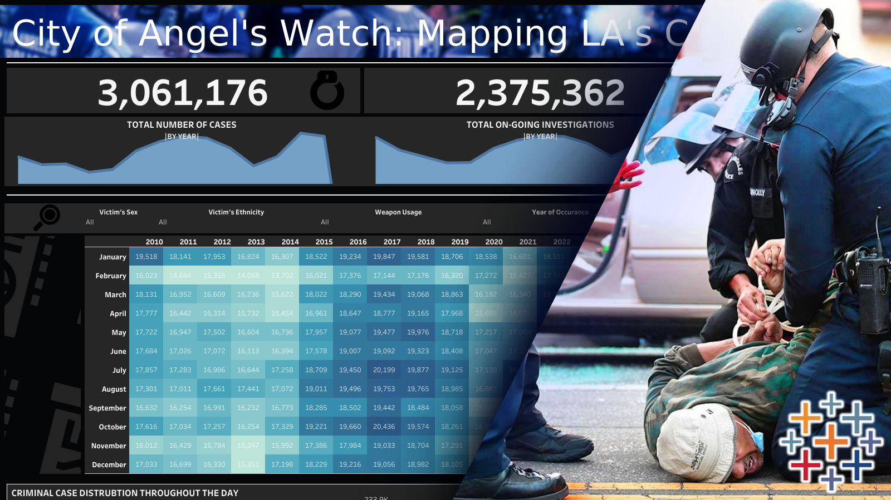
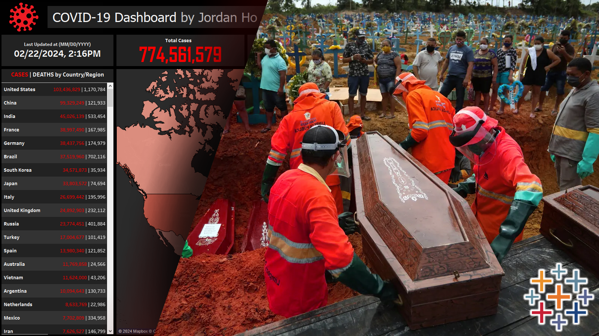
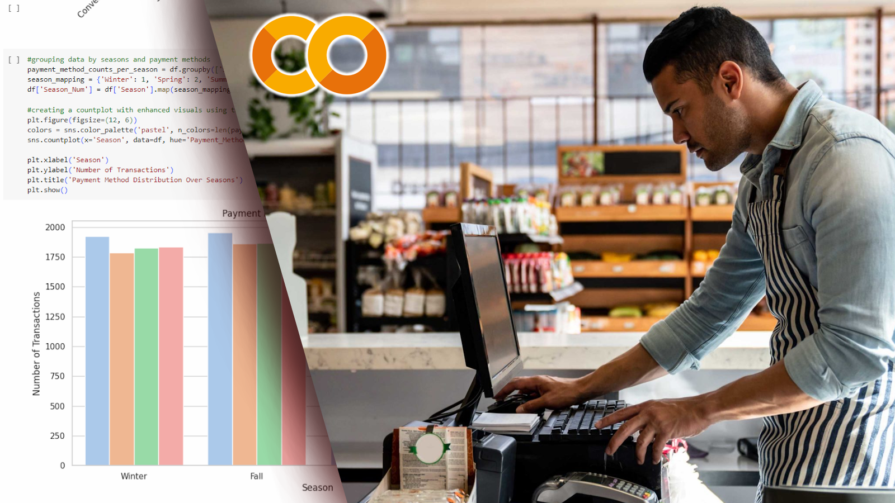
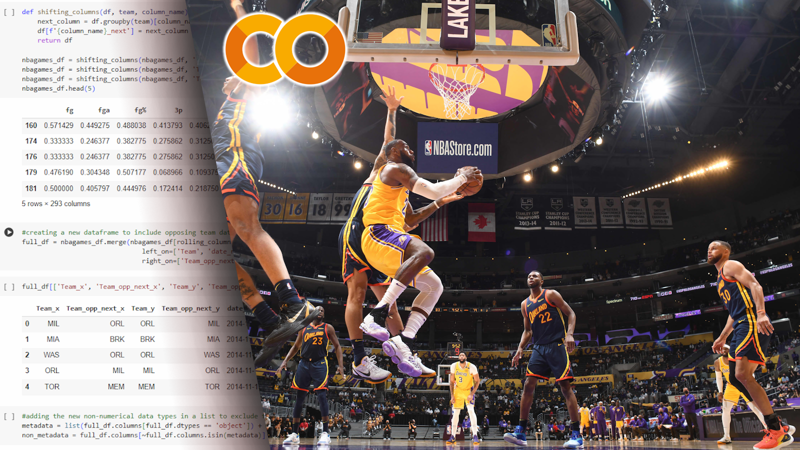
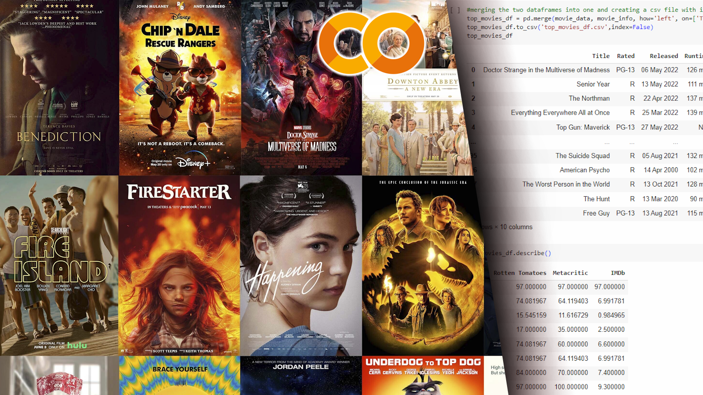

May 2024
Provides detailed visualizations of crime data, including total case counts, weapon-related incidents, crime hotspots, etc., and offers a comprehensive analysis to better understand and
address crime in Los Angeles.


Analyze and visualize COVID-19 data using SQL for comprehensive data exploration and Tableau for intuitive dashboard creation, revealing crucial trends and insights.
Unveil insights into U.S. police shootings from 2015 to September 2022 through interactive Tableau visualizations,
highlighting key demographic trends, circumstances, and geographical patterns.

Explore and analyze an online shopping dataset to derive valuable insights into customer behavior, product sales, and transactional patterns.

Derive actionable insights from retail transactions through advanced analytics for enhanced data-driven decision-making.

Develop a predictive system for NBA game outcomes using machine learning and advanced data analysis techniques.
Perform comprehensive data analysis and visualization on student performance data, identifying correlations and dependencies to enable data-informed decisions for educational institutions.

Build a movie data analysis system through multiple sources, enabling insightful film analysis and appreciation through data-informed decision-making.
Providing sports analytics by gathering and organizing height data from CUNY's volleyball and swimming team rosters.